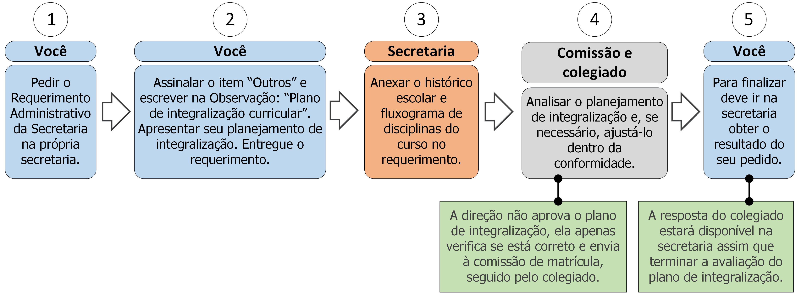

15.3 Plano de integralização curricular

15.3.1 Descrição
Para finalizar o curso há a necessidade de integralizar os créditos e colar grau. Para isso deve seguir os seguintes passos:
- A. Peça o Requerimento Administrativo da Secretaria;
- B. Assinale o item “Outros” e preencha no campo Observação: “Plano de integralização curricular”;
- C. Você tem duas opções: ou redigir seu plano de integralização curricular no campo Observação ou anexar um documento que apresente seu plano de integralização curricular (ver documentos na seção 15.3.2);
- D. Entregue o requerimento;
- E. A secretaria imprimirá seu histórico escolar e matriz curricular e anexará ao documento;
- F. A Comissão de Matrícula avaliará o plano de integralização curricular, caso esteja insatisfatório proporá alterações;
- G. O Colegiado de Bacharelado em Sistemas de Informação avaliará o plano de integralização curricular, caso esteja insatisfatório alterará o plano para conformidade;
- H. O Colegiado de Bacharelado em Sistemas de Informação gerará o plano de integralização definitivo;
- I. Vá à secretaria e procure saber sobre o resultado do seu requerimento (ver regra 1 na seção 15.3.3).
15.3.2 Documentos necessários
Plano de integralização curricular (opcional, ver Passo C).
15.3.3 Regras
- 1. Prazo de efetivação: A Secretaria e a direção têm até 5 dias úteis para analisar o planejamento de integralização.